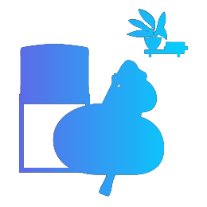
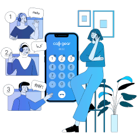

اسمح للمتصل بالتحدث إلى نفس الموظف باستخدام ميزة الوكيل المفضل
لن يضطر عميلك أبدًا إلى تكرار المعلومات إذا قمت بتوصيله بوكيل تحدث إليه في مرة سابقة
ابدأ
تأكد من أن عملائك لا يضيعون وقت أي شخص في البحث عن معلومات الطلب أو إعادة وصف الموقف، من خلال تمكين خيار المدير الأخير أو الوكيل المفضل
لا تفقد مسار المحادثات
باستخدام خيار "آخر مدير"، سيتم تحليل أي مكالمة واردة لمعرفة ما إذا كان رقم المتصل موجودا بالفعل في قاعدة بيانات "كول جير" أم لا.
إذا وجد النظام تطابقًا، فسوف يتعامل مع هذا المتصل كعميل متكرر ويربطه ببيانات التعاملات السابقة، مما يسمح بتوصيله دائمًا إلى الموظف المناسب.

من خلال توصيل العملاء بموظف تربطهم به علاقة بالفعل، يمكنك الاستمرار في ترك انطباع إيجابي وزيادة الثقة والألفة وحتى تقديم نهج شخصي في التعامل
أسئلة شائعة حول خاصية "آخر مدير"
ما هي خاصية "آخر مدير"؟
ميزة "آخر مدير" أو "الوكيل المفضل" هي خاصية تسمح لك بتوصيل أي عميل بالموظف الذي تحدث إليه العميل في تعامله السابق مع شركتك.
ما هي مزايا خاصية "آخر مدير"؟
غالبًا ما يحتاج العميل الجديد إلى تقديم معلومات معينة - إما تفاصيل التسليم أو الدفع مقابل الطلب أو أي أسئلة أو شواغل أخرى. يمكنك تبسيط تجربة المتصل وتوفير وقت موظفيك باستخدام خاصية "آخر مدير" أو "الوكيل المفضل". قم تلقائيا بتوصيل المتصلين بالموظفين الذين لديهم معلومات مسبقة عن العملاء ويحظون بثقتهم.
المزيد من الميزات المدهشة التي يمكن لشركتك استخدامها مع ميزة "آخر مدير"

القائمة الصوتية (الرد الآلي)
رسائل صوتية مسجلة مسبقًا للترحيب بالمتصل وتوجيهه بشكل صحيح
Learn More

إدارة قوائم الانتظار
قم بتحسين قوائم انتظار المكالمات الخاصة بك من خلال القواعد المخصصة أو أعد توجيه المكالمات المتسلسلة
Learn More
إشعارات المكالمات
احصل على تنبيهات بالمكالمات الفائتة مباشرة إلى صندوق البريد الإلكتروني أو نظام إدارة علاقات العملاء الخاص بشركتك.
Learn More
Read the articles from our blog

IP Telephony for Education: How to Handle 27% More Calls to Your Business

How to 70X Increase in Profits During Pandemic: Online Store Case

Virtual Business Phone System for Car Dealerships: How to boost sales 2x

IP Telephony for Medicine: How to Increase the Number of Processed calls by 60% and free your managers’ time by 20%